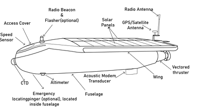
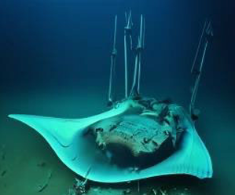

Approximately 95% of the ocean remains unexplored, revealing that deep-sea exploration comes with considerable challenges, and at the same time, it presents
amazing opportunities. Oceanic research imposes serious risks on robotic navigation systems due to high pressure, low temperature, lack of sunlight, limited
energy resources, and absence of GPS signals (Zhang B, et al., 2023). This research article focuses on the cutting-edge navigation technology that enables
autonomous underwater vehicles (AUVs) to map and manoeuvre effectively in dynamic, unstructured environments. Furthermore, it addresses the supply of power
that extends mission duration, such as fuel cell solutions and innovative batteries allowing robots to operate independently for a longer period. This research
aims to focus on the pros/cons of core technologies, advancing the capabilities of self-navigating robots for long-term exploration and resource assessment in
remote, challenging deep-sea areas.
Introduction
Designing self-navigating robots for deep-sea exploration comes with many challenges that engineers need to overcome. Engineers need to build
AUVs that can function in the most extreme and isolated conditions on Earth. Their primary goal is to create robots that can accomplish tasks
independently, without human intervention (Wynn et al., 2014). Overcoming these challenges will be vital in refining AUVs and realizing their complete
functionality in underwater studies. AUVs require advanced technology, which can resist very high pressures and function in total darkness.
These robots are critical for oceanographic research, resource monitoring, and environmental protection in the largely unexplored depths of
the ocean (Wynn et al., 2014).
Main body
Navigation systems
The oceans cover more than 70% of the Earth and pose extreme challenges for navigation tasks in deep-sea settings, due to the absence of GPS signals at
depths beyond shallow waters (Zhang B, et al., 2023). This limitation has been surpassed by the engineers through the addition of advanced technology into
the self-navigating AUV, such as acoustic, inertial, and visual navigation systems (Ehlers, 2020). Acoustic positioning is the process of sound waves that are transmitted
and received between devices. Systems such as ultrasound baseline allow AUVs to determine their location at known points or surface stations (Paull et al., 2014).
Acoustic navigation can be divided into three main types; Long Baseline systems (LBL), Short Baseline systems and Ultra Short Baseline systems (Ehlers, 2020).
LBL is currently the most widely utilised acoustic navigation system due to its precision and dependability (Zhang B, et al., 2023). Long Baseline
systems operate at frequencies around 12kHz which provide accurate positioning within a few meters over several kilometres (Ehlers, 2020). Higher
frequency LBL systems, achieve sub-centimetre precision and faster update rates (up to 10 Hz) but are limited to shorter ranges of about 100 meters due to a
reduction in sound strength in water (Zhang B, et al., 2023). These advancements in acoustic navigation highlight their essential role in enabling AUVs to
navigate and perform complex operations in underwater environments.
Energy solutions
Additionally, another important aspect of AUVs is the development of efficient and reliable charging systems to support long-duration missions in remote
environments. This is due to, limited capacity of onboard energy storage, AUVs depend significantly on advanced charging solutions, such as battery swapping,
docking stations and Solar charging (Hasan et al., 2024). These systems must factor in extreme conditions like high pressure, low temperatures, and strong
currents (Zhang B, et al., 2023). One of the most common methods for AUVs when surfaced is battery swapping but it requires high downtime and requires
supporting vessel (Hasan et al., 2024). Battery swapping is not considered the most efficient method, as it introduces significant delays and hinders
operational efficiency (Hasan et al., 2024). Solar charging offers AUVs the potential for sustained mission endurance by harvesting sunlight and storing
energy in onboard batteries (Hasan et al., 2024). However, this method requires the AUV to surface during daylight hours, which can interrupt submerged
operations (Hasan et al., 2024). The SAUV I (as shown in Figure 1), is one of the pioneering solar-powered AUVs, which was designed as a lightweight system
(90 kg) equipped with two 30-W solar panels (Hasan et al., 2024). Its successor, the SAUV II, was developed (Hasan et al., 2024).
This second-generation model features a larger solar array (1 m² of panels) and a more robust energy system with a 32 V, 2 kWh capacity (Hasan et al., 2024).
Solar power generated by underwater vehicles can be calculated by the following equation,
Psolar = ηsolar. Asolar.Isolar
where Psolar represents solar power, ηsolar denotes the efficiency of the solar panels, Asolar signifies the surface
area of the solar panels, and Isolar represents the solar irradiance, which is the solar energy received per unit area (Hasan et al., 2024).
This equation helps in assessing the feasibility and optimisation of solar charging systems in AUVs, empowering scientists and engineers to develop more
efficient solutions (Hasan et al., 2024).
 Figure 1 (Hasan et al., 2024)
Materials and Design
A primary challenge for engineers is designing AUVs capable of withstanding high-pressure and extreme temperatures. Achieving this requires using advanced
materials and innovative engineering solutions specifically tailored to the harsh conditions of deep-sea environments. AUV hull is critical in shielding
delicate components like electronics and batteries from extreme pressure while minimising drag and compressibility (Elkolali & Alcocer, 2022).
As AUVs descend, increasing external pressure causes the hull to compress, leading to buoyancy loss (Elkolali & Alcocer, 2022).
Choosing the right material for the hulls of AUVs is essential to help them survive the intense pressure and extreme temperatures of the deep sea.
Carbon/Epoxy and Glass/Epoxy composites are the go-to materials for building AUVs because they offer great performance at a reasonable cost (Elkolali & Alcocer, 2022).
Carbon/Epoxy is particularly popular because it’s 20-30% lighter than glass fibres, yet it’s stronger and stiffer, making it a perfect fit for the tough conditions
underwater (Elkolali & Alcocer, 2022). AUV designs have taken ideas from various bionic models, including biological fish, to enhance
their capabilities (Hasan et al., 2024). For example, AUVs inspired by manta rays utilise wing-like structures and control systems for enhanced manoeuvrability, enabling efficient
underwater exploration with minimal environmental disruption (Hasan et al., 2024). The smooth movement of these AUVs reduces their
impact on fragile ecosystems, allowing them to collect data and explore with minimal disruption (Hasan et al., 2024). These
advancements demonstrate engineer's success in creating more efficient, durable, and sustainable underwater technologies.
 Figure 2 (Hasan et al., 2024)
Conclusion
In the end, AUVs have significantly improved over the years, with advanced technology and materials, they are able to operate in the most adverse conditions
of the ocean. From advanced navigation systems to solar-powered charging solutions, engineers are overcoming various obstacles to enhance AUV efficiency,
durability, and environmental sustainability. These breakthroughs not only pave the way for further ocean exploration but also ensure that AUVs play a key
role in scientific research and the conservation of marine ecosystems.
References
(1)Ehlers, F. (2020) ‘AUV Navigation: Challenges and Solutions’, Autonomous Underwater Vehicles: Design and practice, pp. 105–143. doi:10.1049/sbra525e_ch5.
Ehlers, 2020
(2) Elkolali, M. and Alcocer, A. (2022) ‘Design and testing of a composite pressure hull for Deep Autonomous Underwater Vehicles’, IEEE Access, 10,
pp. 85831–85842. doi:10.1109/access.2022.3198685.
Elkolali & Alcocer, 2022
(3) Hasan, K. et al. (2024) ‘Oceanic challenges to Technological Solutions: A review of Autonomous Underwater Vehicle Path Technologies in Biomimicry,
control, navigation, and sensing’, IEEE Access, 12, pp. 46202–46231. doi:10.1109/access.2024.3380458.
Hasan et al., 2024
(4) Paull, L. et al. (2014) ‘AUV navigation and localization: A Review’, IEEE Journal of Oceanic Engineering, 39(1), pp. 131–149. doi:10.1109/joe.2013.2278891.
Paull et al., 2014
(5) Wynn, R.B. et al. (2014) ‘Autonomous underwater vehicles (auvs): Their past, present and future contributions to the Advancement of Marine Geoscience’,
Marine Geology, 352, pp. 451–468. doi:10.1016/j.margeo.2014.03.012.
Wynn et al., 2014
(6) Zhang, B., Ji, D., Liu, S., Zhu, X. and Xu, W. (2023). Autonomous Underwater Vehicle navigation: A review. Ocean Engineering, 273(113861), p.113861.
doi:https://doi.org/10.1016/j.oceaneng.2023.113861.
Zhang B, et al., 2023